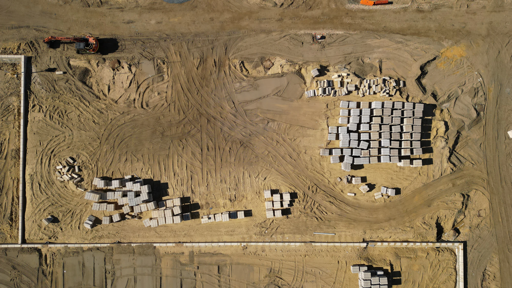

Surveillance de chantier par drone.
Grands chantiers : un drone en station sur votre site fait les rondes pendant les périodes d'inactivité et part sur alerte. Vos équipes suivent tout à distance.
Un chantier change toutes les semaines.
Les zones de stockage se déplacent. Le matériel coûteux change d'emplacement.
Des caméras fixes suivent difficilement ce rythme. Les trajectoires de mission du drone se reconfigurent à mesure que le chantier avance.
Le chantier avance, le drone garde la mémoire.
Le drone rejoue la même trajectoire à chaque passage. Faites glisser pour comparer deux dates.

Mars · J0Septembre · J+180Illustration sur deux vues aériennes de chantier.
Ce que fait le drone sur un chantier.
Rondes hors activité
Soirs et week-ends, le drone contrôle le chantier quand il n'y a plus personne.
Matériel et stocks
Les zones de stockage des matériaux et le matériel stationné sont vérifiés à chaque passage.
Missions évolutives
Les trajectoires de mission se reconfigurent à mesure que le chantier évolue.
Suivi d'avancement
Même point de vue à chaque passage. L'avancement est documenté et partagé avec la maîtrise d'ouvrage.
Mesure de volumes
Déblais, remblais, stocks de matériaux : les volumes se mesurent à partir des vols.
Historique du site
L'état d'une zone se retrouve à une date donnée. Chaque mission alimente un historique consultable.
Un véhicule sur le chantier, un samedi à 21 h 30.
Ce qui se passe entre l'alerte et la décision, et qui agit à chaque étape.
Exemple d'illustration. Les délais réels dépendent du site et de la procédure retenue.
Le contrôle d'accès signale l'ouverture du portail, hors horaires.
L'alerte arrive dans FLEAT. Le drone part vers l'entrée du chantier.
Le drone est sur zone en 40 s environ. L'image arrive au PC sécurité.
L'opérateur voit un véhicule arrêté près du stock de matériel.
Il prévient les forces de l'ordre, images datées et localisées à l'appui.
Ce que nous regardons sur votre site.
Un drone ne s'installe pas partout. Nous étudions la faisabilité avant tout engagement.
- Durée et phasage du chantier
- Emprise et évolution prévue
- Grues et obstacles en hauteur
- Environnement immédiat
- Besoins de gardiennage actuels
Les questions des responsables de chantier.
Oui. Les trajectoires de mission se reconfigurent à mesure que le chantier évolue. Le phasage est pris en compte dès l'étude.
Il fait des rondes programmées pendant les périodes d'inactivité. Après une alarme, il part sur la zone et y arrive en 40 s environ, selon la configuration du site.
Ils font partie de l'étude. Grues et obstacles sont pris en compte dans la conception des trajectoires.
Non. Le drone renforce la capacité d'observation et accélère la levée de doute. Nous étudions vos besoins de gardiennage actuels pour définir le bon dispositif.
Cela dépend du site et de son environnement aéronautique. Nous préparons le scénario de vol selon le cadre applicable, avant tout engagement.
Oui, la station est posée et raccordée sur le site. Son emplacement est choisi pendant l'étude, en tenant compte des phases du chantier.
Oui. Les vues sont prises au même cadrage à chaque passage. L'avancement est documenté et partageable avec la maîtrise d'ouvrage.
Étudions la surveillance de votre chantier.
Décrivez-nous votre site et vos enjeux. Nous évaluons la faisabilité d'un dispositif adapté à vos contraintes.